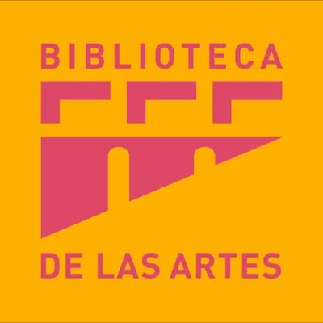

Biblioteca de las Artes
Espacio vivo de cultura, lectura y participación ciudadana para nuestra comunidad.


Espacios abiertos para la comunidad y el aprendizaje continuo en Guayaquil.
La Biblioteca de las Artes se consolida como un referente de acceso libre a la información, el arte y la literatura. Ubicada en el centro de la ciudad, promueve activamente el encuentro ciudadano a través de servicios bibliotecarios modernos e inclusión cultural para todas las edades.
Nuestro propósito es conectar a la ciudadanía con el conocimiento mediante colecciones especializadas, áreas de lectura colaborativa y una agenda de eventos que fomenta la apropiación de los espacios públicos y patrimoniales.

Conoce los espacios diseñados para el aprendizaje, la infancia y la investigación.
Disponemos de la Sala Ría como un espacio especializado para la niñez y la estimulación temprana a través de la lectura, áreas de estantería abierta para consulta bibliográfica, préstamo de libros a domicilio y acceso a equipos de cómputo y ciber gratuito para estudiantes e investigadores.
Actividades gratuitas orientadas a la comunidad de Guayaquil.
Participa en nuestra programación semanal que incluye el tradicional Cine Abierto de los Sábados, talleres formativos de dibujo, pintura y escritura creativa, así como conversatorios con autores locales y presentaciones artísticas para toda la familia.
Lo que dicen los ciudadanos y visitantes sobre su experiencia en la biblioteca
"Un lugar tranquilo y acogedor en medio del centro de Guayaquil ideal para estudiar y concentrarse."
"Excelente iniciativa para acercar a los más pequeños a los libros de una manera divertida y segura."
"Las proyecciones de los sábados son una gran alternativa de entretenimiento cultural gratuito."
"Los talleres de pintura han permitido desarrollar nuevas habilidades artísticas en la comunidad."
"Un punto de convergencia donde la ciudadanía se apropia de la cultura y el patrimonio."
"El acceso a equipos y conectividad facilita las consultas académicas de estudiantes universitarios."
Av. Malecón y Aguirre (Esquina), Guayaquil, Ecuador | Lunes a Sábado
Infraestructura diseñada para la investigación artística y el encuentro comunitario.
Contamos con salas de lectura general, estantería abierta, mediateca y áreas de estudio colaborativo. La biblioteca facilita el acceso libre a fuentes biblio-hemerográficas especializadas en artes visuales, música, cine y literatura.
Además, promovemos actividades de vinculación con la sociedad mediante talleres infantiles, clubes de lectura y exposiciones temporales abiertas a todo el público.
Formación continua e intercambio cultural para todas las edades.
Participa en nuestros programas mensuales que incluyen laboratorios de escritura creativa, talleres de encuadernación, proyecciones cinematográficas y conversatorios con artistas locales e internacionales.
Tu opinión es fundamental para mejorar nuestros servicios culturales y espacios de lectura.